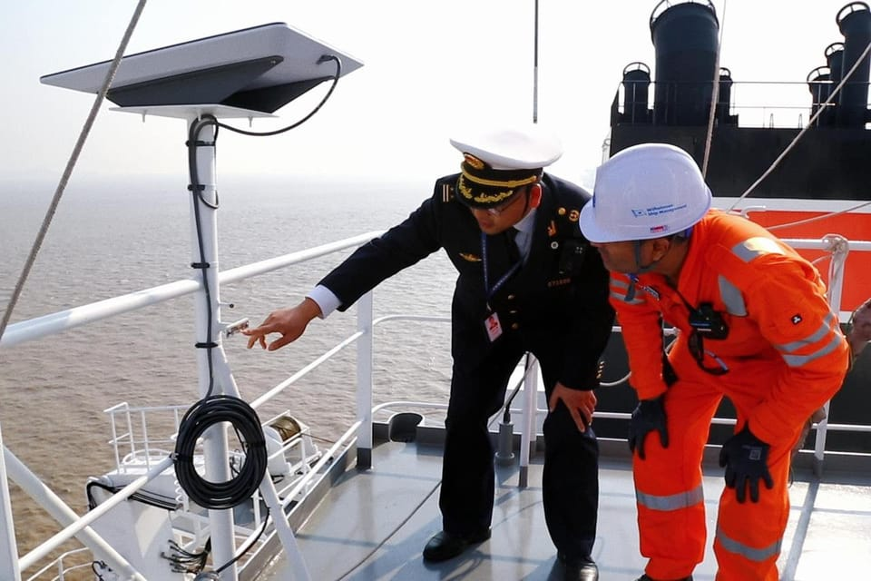

世界苦茶12月17日新闻 | 31条 | 中日在联合国继续交锋

中日在联合国继续交锋 | 美国劳动力市场正在放缓 | 中国2010年来首次跌出德国前五大出口国 | 白宫幕僚长苏西·威尔斯在《名利场》抨击邦迪 | 东京市民前往动物园最后观看熊猫
苦茶数据
美元兑人民币：7.03（昨日7.03，前日7.04）
美元兑日元：155.45（昨日154.66，前日155.15）
上证指数：3870（昨日3824，前日3867）
标普500指数：6800（昨日6816，前日6818）
比特币：87656（昨日87304，前日87030）
布伦特原油：59.83（昨日59.61，前日60.60）
中国新闻
• 美中高级防务官员继续进行“军方对军方”对话。
在“军方对军方”对话持续之际，美中高级防务官员会晤 此次会谈在国防部长皮特·赫格塞斯与中国国务委员兼国防部长、上将董军会晤后举行，旨在帮助稳定双边关系 本周，美国与中国的高级防务官员在华盛顿会面，这是两国在寻求稳定关系过程中恢复军方对军方沟通的最新迹象。五角大楼周二表示，负责中国、台湾和蒙古事务的副助理国防部长阿尔瓦罗·史密斯在12月15日至16日与中央军委国际军事合作办公室副主任、少将叶江就第19届美中防务政策协调会进行了会谈。会后，赫格塞斯表示，两国同意“建立军方对军方渠道，以在出现问题时进行冲突避免和降级处理”。
• 在美方情报协助下，中国查获430公斤可卡因，迹象显示反毒协议可能正在发挥作用。
中国在美方情报协助下缉获430公斤可卡因，显示反毒协议或见成效 据央视报道，11月26日，广东深圳盐田港一国际集装箱内被发现该批毒品。案件正在调查中，未透露其他细节。本月早些时候，中国表示双方禁毒主管部门一直在“稳步推进联合反毒行动并取得显着成效”。中国公安部12月6日称，双方在多起案件上开展合作并保持“密切沟通”，包括举行视频会议、交流进展并讨论未来合作的重点领域。
• 中日联合国代表在安理会就高市言论交锋。
中日两国常驻联合国代表本周在安理会就日本首相高市早苗的“台湾有事论”展开交锋。据中国常驻联合国代表团官网消息，中国常驻联合国代表傅聪当地时间星期一在安理会“为和平展现领导力”公开辩论会上发言时，批评高市言论“逆流而动”，对亚洲乃至世界和平带来严重隐患，再次敦促其撤回言论，认真反思悔过。傅聪说，高市涉台言论是对中国内政的粗暴干涉，公然违背日本作为二战战败国对中国及国际社会所做承诺，直接挑战二战胜利成果和战后国际秩序，违反以联合国宪章宗旨和原则为基础的国际关系基本准则。
• 有迹象表明中国在黄海扩建设施将加剧韩国的疑虑。
中国在黄海建设设施的举动预计将加剧韩国疑虑 报告指出，在双方均宣称为其专属经济区的海域内，布设了越来越多可能具备军事用途的浮标 华盛顿战略与国际研究中心旗下项目“超越平行”周一发表的报告称，黄海临时措施区及其周边的中国活动正在“增加”。报告表示，北京正在该区域布设浮标，不能排除这些浮标可能具有军事用途的可能性。韩国与中国在PMZ内对专属经济区有重叠主张。根据2001年的一项协议，双方同意允许各自的渔船在该区域作业并共同管理海洋资源，同时禁止除航行和捕鱼以外的任何活动。报告称，这些中国浮标呈灯塔式设计，具有圆形浮动基座、中央垂直塔柱和上部平台，外形与一种标准化的10米海洋环境监测浮标相符。
**• 教育部12月4日发《关于进一步加强中小学日常考试管理的通知》。 **
小学一二年级不进行纸笔考试，其他年级限举行期末考试。初中可适当安排期中考试。义务教育学校日常考试实行等级评价，考试结果不排名、不公布。小学各年级、初高中非毕业年级，严禁组织区域性或跨校际的考试。初高中毕业年级可在总复习阶段组织一两次模拟考试。考试计划须在新学期开学前在校内公示，并上报备案。试题情境素材、设问、参考答案、评分标准等，要与党的教育方针政策保持高度一致。造成不良影响的，试卷命制者、选用者和审核者一体同责。
印太新闻
• 数千人涌向东京动物园，观赏日本最后两只熊猫返华前的风采。
成千上万的人涌向东京动物园，只为在两只将于下月返还中国的“日本最后大熊猫”离开前最后一睹芳容 东京——成千上万的市民涌向东京上野动物园，希望在下个月两只受欢迎的双胞胎大熊猫返回中国前，最后一睹它们的风采。随着东京与北京关系恶化，人们担心是否还能在日本看到它们的替代者以及何时能看到。东京都政府周一宣布，小小和蕾蕾将于一月下旬返回中国，公开展示的最后一天为1月25日。它们的离开将使日本时隔半个多世纪再次出现没有大熊猫的情况。鉴于两国关系近周骤降，寻找替代者的前景并不乐观。大熊猫原产于中国西南，已成为一种非正式的国家象征。北京将大熊猫借给他国以示友好，但对大熊猫及其所生幼崽保有所有权。
• 日本解除大地震预警，但在7.5级地震一周后仍呼吁保持警惕。
日本在一周前发生7.5级地震后，于周二取消了对该国东北海岸发布的“特大地震预警”，但同时敦促民众保持警惕。取消预警意味着被指定区域内的居民不再被要求穿睡衣外出就寝、将头盔、鞋子和应急包放在床边，以防发生8级或以上的大地震。气象厅与内阁府在联合新闻发布会上表示，发生特大地震的概率已有所下降，但撤销预警并不等于风险已消失，呼吁居民继续保持足够的警惕和防灾准备。气象厅在上周一于青森县东海岸及北海道以南近海发生7.5级地震后，发布了所谓的特大地震预警，当时该次地震在该地区造成轻微破坏。
• 台湾在一宗高调逃避兵役事件后推动收紧征兵规则。
台湾拟收紧征兵规则以应对备受关注的逃兵案件，拟议变更还将要求跨性别和双性人服替代役，此举已引发强烈反弹 此外，拟议变更还将要求跨性别和双性人服替代役，此举已引发人权组织和公众其他人士的反对。岛内国防部周一公布了一项对体位标准的修订草案，全面检视免役、替代役和常备役的资格，官员称此举旨在堵塞长期存在的漏洞，恢复征兵制度的公平性。若该修订案经立法院通过，免役标准将被大幅收紧。仅身体质量指数超过45或身高在144厘米及以下的个人可获得免役资格。此前，免役适用于BMI超过35或身高极端的男性。以身高170厘米的男性为例，新规则将把免役的体重门槛从略高于101公斤提高到130公斤。
• 个人取得日本不动产将须提供国籍，26年度实施。
日本法务省12月16日发布消息称，将规定个人在取得土地、建筑物等不动产时，必须提供国籍资讯。要求在不动产买卖、继承等转移登记环节提供国籍资讯，以便掌握所有者的国籍。经过公开征求意见后，法务省将在本年度内修改相关省令，并于2026年度正式实施。| 东京的高楼 | 日本的不动产登记申请表中将设国籍填写栏。还要求提交护照及居民票等可确认国籍的本人身份证明文件。日本人也被纳入掌握国籍的对象。国籍资讯将作为内部资讯保管。考虑到个人隐私保护等，不会记录在不动产登记簿上。
• 日企冬季奖金每人平均约4.68万人民币，3年连创新高。
日本经济新闻12月15日汇总了日本企业2025年冬季奖金调查结果。每人平均奖金发放额同比增长6.40％，达到102万9808日元，首次突破100万日元大关。连续三年刷新历史最高纪录。建筑业和防卫相关行业起到拉动作用，但受美国川普政府关税政策影响的汽车和钢铁相关行业增长乏力。此次以日本的上市企业为主，针对具有可比性的478家企业统计了截至12月2日的数据。奖金发放额连续5年增加，创下自1975年开始调查以来的最高纪录。总体增幅比2024年冬季高出2.72个百分点。
• 赖清德批在野党滥权立法 蓝白反指执政党行政独裁。
台湾总统赖清德发表录影谈话，指责在野阵营滥权立法强行通过《财政收支划分法》与反年金改革相关修法，将台湾推向“立法滥权、在野独裁”的悬崖边缘。在野的蓝白两党也毫不示弱，反批执政党践踏台湾民主宪政，不副署、不执行立法院通过的法案，才是“行政独裁”。台湾朝野近期因《财划法》修法、公教人员年金改革，以及明年度政府总预算案审议等议题陷入僵局。赖清德星期一邀请行政院长卓荣泰、立法院长韩国瑜与考试院长周弘宪，赴总统府茶叙，盼促进行政、立法等部门对话；但韩国瑜以要先取得立法院朝野三党团授权为由，婉拒出席。《财划法》为台湾规范中央与地方政府间财政收入，支出与分配比率的重要法律。
科技新闻
• 中国生物技术公司Scizeng的一项全球许可协议将带来高达14.4亿美元的收益。
中国生物科技公司Scizeng达成全球许可协议，交易总额最高可达14.4亿美元。Yarrow Bioscience获得GenSci098用于治疗甲状腺相关眼病和Graves病的全球独家权利。GenSci098当前在中国大陆和美国正在进行临床试验。常州高新总经理雷进博士在一份声明中称，“这一具有里程碑意义的合作是我们成为全球制药创新者愿景的战略性一步”，并补充说GenSci098显示出巨大潜力。根据常州高新周二向深圳证券交易所提交的文件，Scizeng将获得7000万美元的预付款，以及高达13.7亿美元的与研发、监管批准和商业成功相关的里程碑付款。
经济新闻
• 导致美国可负担性问题的头号原因刚变得更糟了。
劳工统计局周二公布的最新就业报告显示，上月这一问题进一步恶化——而周四将公布的另一份通胀报告可能表明实际压力更大。劳工统计局周二报告称，11月美国工人平均时薪为36.86美元，较去年同期上涨3.5%。这听起来像是可观的涨幅，但几乎只能勉强追上3%的年度消费者价格涨幅。而且这是自2021年5月以来美国工资年增幅的最低水平。当然，这只是平均数，受到收入最高人群上月4%工资增长的拉动。
• 美国11月仅新增6.4万个就业岗位，显示劳动力市场正在放缓。
就业市场继续显现降温迹象。美国雇主11月仅新增6.4万个岗位，根据劳工部周二发布的延迟报告，失业率从9月的4.4%上升至4.6%。这是四年多来最高的失业率。本应在本月早些时候公布的就业报告因为为期六周的联邦政府停摆而受阻，导致对就业市场的监测能力受限。对10月和11月的就业数据被延后统计，并于周二一并公布。报告显示美国10月净减少10.5万个岗位。这主要由联邦劳动力的大幅减少所致，年初接受自愿离职补偿的16.2万名政府雇员被正式从工资表中剔除。10月被停职的联邦雇员无法在当月进行通常的家庭调查，因此该月的失业率仍不得而知。
• 欧盟议会在与各国首都进行关键会谈之前投票通过收紧对南方共同市场的保障措施。
斯特拉斯堡——周二，欧洲议会投票通过加强对欧盟与南美南方共同市场集团贸易协定的额外保护条款，为与成员国的谈判打开了通道，后者需迅速达成妥协以最终敲定该协议。议员们以大比数通过了旨在保护欧洲农民的额外保障措施，以防南方共同市场大量更便宜的农产品涌入导致本地市场失衡。出席的662名议员中，431票赞成，161票反对，70票弃权。这些保障措施是法国和意大利在成员国另一项表决中支持整个协议的关键让步，也将决定欧洲委员会主席乌尔苏拉·冯德莱恩本周末能否飞往巴西签署这项有争议的协议。
• 中国2010年来首次跌出德国前五大出口国。
2025年12月16日德国联邦贸易与投资署的统计显示，中国今年将跌出德国前五大客户榜之列，降为排名第7的德国出口商品买家。另一方面，德国今年从中国的进口将增长超过7%，导致德国对华贸易逆差创下新纪录。德国联邦贸易与投资署预计，德国对中国的出口今年将暴跌10%，降至810亿欧元。这将使中国在德国产品买家排名榜上位列第七，低于去年的第五位。统计显示，中国被英国和意大利超越。这将是自2010年以来中国首次跌出德国客户榜前五之列。
• 中国对欧盟猪肉征收反倾销税，但下调了最终税率。
在为期18个月的调查后，中国宣布对来自欧盟的猪肉进口征收最高19.8%的反倾销税。商务部周二发布的公告称，自周三起生效的税率根据企业不同在4.9%至19.8%之间，将实施五年。最终裁定的税率明显低于九月初裁定时的预估值，彼时欧盟猪肉生产商被征以高达62.4%的保证金率。商务部表示，征税范围包括鲜、冷、冷冻猪肉及猪内脏、不含瘦肉的猪油、猪肠、膀胱和胃等产品。商务部在声明中称，最终裁定是在国内生猪产业面临经营困难及强烈保护呼声的背景下作出的。
• 福特因缩减电动汽车计划计提195亿美元损失。
福特周一表示将收缩其电动车计划，此举将导致公司计入一项主要在本季度确认的195亿美元减值损失。但剔除该项损失后，公司称由于其传统汽油动力卡车和SUV销量强劲，本季度实际上应表现相当不错。公司将全年营业利润目标上调至70亿美元。此次对电动车计划的收缩也意味着其旗舰电动车F-150 Lightning将无限期搁置。福特表示，下一代F-150将具备700英里续航里程并提升重载牵引能力。公司周一宣布已于本月停止生产原有的F-150 Lightning车型，但未就新车型何时开始生产给出具体时间。由于原定于9月到期的7500美元联邦购车税抵免，电动车需求在夏季及9月激增。
• 美国政府支持韩企在美建设关键矿物加工厂。
美国政府支持一个将由韩国锌业建造的74亿美元关键矿物加工厂投资项目。韩国锌业表示，美国政府促请其建设该厂，以应对关键材料与日俱增的供应链风险。该工厂将生产锑、锗和镓等应用在半导体和电子产品中的元素，锌、铅、铜等有色金属，以及金、银等贵金属。该公司周一在监管申报文件中表示，该厂将于2027年至2029年建成，然后分阶段投入商业运营。该公司计划收购Nyrstar公司在田纳西州的一座旧冶炼厂，然后在厂区原址重建基础设施，以生产13种金属和用于芯片制造的硫酸。公司目标是年产30万吨锌、3.5万吨铜、20万吨铅和5100吨稀土。
俄乌战争
• 领导人签署条约，成立机构裁定乌克兰战争赔偿。
乌克兰总统弗拉基米尔·泽连斯基于周二与另外35位领导人一起签署同意，建立一个将裁定与俄罗斯入侵乌克兰相关赔偿申索的国际机构，但未回答该组织将如何筹资的问题。在海牙的一次会议上，来自欧盟，加拿大，墨西哥和日本的领导人为成立“国际索赔委员会”正式开绿灯，该委员会旨在补偿乌克兰人因俄罗斯造成的经济损失。
• 彭博社报道，自全面战争爆发以来，俄罗斯石油价格跌至最低。
彭博社12月16日报道，由于西方制裁见效，俄罗斯油价已降至全面入侵乌克兰以来的最低水平。报道称，引用Argus Media数据，来自波罗的海，黑海及远东科兹米诺港的俄罗斯原油平均价格已降至略高于每桶40美元。此报道发布之际，距美国对俄罗斯两大石油公司——俄罗斯石油公司和卢克石油——实施制裁以迫使莫斯科达成和平协议不足两个月。彭博称，过去三个月内交易价格已下跌28%，全球基准价格也在走低。石油与天然气收入约占俄罗斯联邦预算的三分之一，使能源出口成为其军事行动的重要资金来源。
• 俄罗斯央行向Euroclear索赔2290亿美元。
俄罗斯中央银行已就欧清提起诉讼，要求赔偿18.2万亿卢布，俄罗斯国家媒体12月15日报道。此诉讼标志着莫斯科与总部位于比利时的中央证券存管机构欧清之间法律争端的最新升级。上周，俄罗斯曾宣布计划起诉该金融机构，当时欧盟正就如何利用被冻结的俄罗斯主权资产支持乌克兰进行辩论。莫斯科仲裁法院的一名发言人称，该索赔由俄罗斯银行提起，若裁决生效，俄罗斯银行将随后决定如何对包括境外持有在内的欧清资产执行任何判决。欧清持有约1850亿欧元被冻结的俄罗斯资金，这些资金受欧盟在2022年俄罗斯发起全面入侵乌克兰后实施的制裁约束。
• 在俄罗斯无人机袭击乌克兰首都期间，基辅传出爆炸声。
编者按：这是一个持续发展的报道，正在更新。12月16日晚，在俄罗斯对乌克兰首都的无人机袭击中，基辅报告发生爆炸。基辅市长维塔利·克里琴科称，奥博隆斯基区正在部署防空系统，爆炸震动了全城。当地时间晚上10:52，一名在现场的《基辅独立报》记者首次报道了爆炸。尽管美国努力斡旋结束敌对行动，俄罗斯仍定期袭击乌克兰各城市，目标是关键基础设施。12月8日晚，苏梅在俄罗斯袭击后断电。苏梅州州长奥列格·赫里霍罗夫在电报中表示，半小时内有十几架无人机袭击了全市多个地点。12月6日深夜，俄罗斯发动大规模导弹与无人机袭击，重创乌克兰能源基础设施，击中变电站，发电设施。
• 极右领导人巴尔德拉重申反对法国在乌克兰部署军队。
国民阵线党首乔丹·巴尔德拉表示，若该党上台仍反对向乌克兰派遣法国军队，这凸显了若极右派在2027年赢得总统选举，法国对基辅承诺的长期脆弱性。“我们反对像许多许多法国人一样向乌克兰派遣法国军队，”巴尔德拉在斯特拉斯堡对记者说。“另一方面，在我们关于安全保障的讨论中，我们可以考虑一个非军事区，该区由联合国主持并承担责任，”他补充道。作为在法国民调中领先的极右党派国民阵线主席的上述言论，可能会引发人们对现任总统埃马纽埃尔·马克龙在任期内对基辅做出的任何法国安全承诺在他下台后能否持久的担忧。
• 泽连斯基表示，俄罗斯仍要求占领整个顿巴斯，并强调乌克兰不会撤退。
泽连斯基表示俄罗斯仍在要求整个顿巴斯，并称乌克兰不会撤让 乌克兰总统弗拉基米尔·泽连斯基表示，俄罗斯的谈判立场“尚未改变”，并称“他们想要我们的顿巴斯。我们不想把顿巴斯拱手让人。”泽连斯基在12月15日晚接受记者采访时作出上述表示，此前他又与美国谈判代表进行了新一轮会谈，而美方仍坚持偏向俄罗斯的和平方案。由泽连斯基率领的代表团就结束俄乌战争的方案与美国特使史蒂夫·维特科夫和贾里德·库什纳进行了两轮讨论。新一轮谈判已持续三周，此前美国试图通过将乌克兰领土割让给俄罗斯来促成停战。
• 弗里德里希·梅尔茨让德国处于一个陌生的境地：走在前列。
柏林——总理弗里德里希·梅尔茨正以罕见的强势姿态在欧盟核心位置展现德国领导力，将自己定位为不仅捍卫乌克兰，而且据他自己说捍卫整个欧洲的人。这标志着德国对外政策的明显转变。梅尔茨的前任奥拉夫·朔尔茨和安格拉·默克尔都不愿把德国置于如此直言不讳的国际或欧盟领导角色。相反，德国过去倾向于退居后方，避免不必要的风险。德国人甚至创造了一个俚语动词——“默克尔化”——意指犹豫不决。梅尔茨在欧盟内部采取了更积极的立场——承担起过去常由如今实力削弱的法国总统埃马纽埃尔·马克龙扮演的角色。他把自己摆在支持一项风险较高的欧盟计划中最显眼的位置，该计划拟以价值2100亿欧元的贷款补充乌克兰的战争资金。
世界新闻
• 白宫幕僚长苏西·威尔斯在《名利场》抨击邦迪并就特朗普发表看法。
总统唐纳德·特朗普低调但颇有影响力的白宫幕僚长苏茜·威尔斯在周二刊登于《名利场》的采访中批评了司法部长潘姆·邦迪处理杰弗里·爱泼斯坦案的方式，并对她的老板及其周围人物发表了直言不讳的看法，这些言论促使西翼采取危机公关措施。威尔斯是首位担任此职的女性，她出人意料地坦率，称总统“有酗酒者的性格”，并将副总统J·D·范斯形容为算计的“阴谋论者”。作为通常因幕后工作而很少公开露面的幕僚长，威尔斯的这些观点引发了人们对她是否将离职的质疑。该报道刊出后，威尔斯予以反驳，称该文为一篇缺乏背景的“抹黑文章”。
• 枪击案后，共和党人在对阿富汗移民的政策上出现分歧。
在国民警卫队枪击事件后，共和党在阿富汗移民政策上出现分歧 一些共和党人就限制来美的阿富汗人表明看法 国会内的部分共和党人正与特朗普政府在收紧来自阿富汗的合法移民政策上出现分歧，尤其是针对那些曾协助美军行动的移民。过去一年，美国已暂停对包括阿富汗国民在内的签证及其他项目。已经在国内的人也被剥夺了临时居留许可。在上个月一名阿富汗公民被控在华盛顿特区枪杀一名国民警卫队成员后，进一步的移民限制随之出台。来自北卡罗来纳州的共和党参议员汤姆·蒂利斯警告不要出现可能阻止许多有有效临时或永久移民资格案件的阿富汗人来美的“本能反应”。
• 美国军方称在东太平洋对三艘船只的打击造成8人死亡。
美国军方周一表示，他们在东太平洋袭击了三艘被指控走私毒品的船只，共造成8人死亡，此事在国会引发越来越多的审查。军方在社交媒体的一份声明中称，袭击目标为“被指定的恐怖组织”，第一艘船造成3人死亡，第二艘船2人死亡，第三艘船3人死亡。声明未提供其所谓毒品走私的证据，但发布了一段船只航行后爆炸的视频。唐纳德·特朗普总统为这些袭击辩护，称这是遏制毒品流入美国所必需的升级行动，并断言美国正与毒品贩运集团处于“武装冲突”状态。但特朗普政府在船只打击行动上正面临来自议员的日益审查，自九月初以来，该行动已在已知的25次打击中至少造成95人死亡。
• 美国国会大厦将用青少年民权领袖芭芭拉·罗斯·琼斯的雕像取代罗伯特·E·李。
美国国会大厦周二开始展出一座青少年民权偶像芭芭拉·罗斯·约翰斯的雕像，她在为弗吉尼亚州一所被隔离高中的恶劣条件抗议时的形象被呈现出来，这座雕像尖锐地取代了数年前被移除的南方邦联将领罗伯特·E·李的雕像。代表弗吉尼亚州在国会展出的这尊雕像在解放大厅举行了揭幕仪式，出席者包括共和党众议院议长迈克·约翰逊、民主党少数党领袖哈基姆·杰弗里斯、共和党弗吉尼亚州州长格伦·杨金、弗吉尼亚州国会代表团以及民主党当选州长阿比盖尔·斯潘伯格。约翰逊表示，约翰斯家族有200多名成员到场，华盛顿东部高级中学合唱团演唱了《主啊你真伟大》、《没人能把我转回来》和《总赞美》。
**• 特朗普12月16日下令全面封锁进出委内瑞拉的受制裁油轮。 **
特朗普发文指控委内瑞拉利用石油资助毒品贩运等犯罪活动，誓言将继续加大军事行动，直到委内瑞拉将“之前从我们这里偷走的所有石油、土地和其他资产归还给美国”。委内瑞拉发表声明，指责特朗普“违反国际法、自由贸易和自由航行原则”，对委内瑞拉构成“鲁莽且严重的威胁”。声明还提到，特朗普的说法表明其目的是窃取属于委内瑞拉的财富。
• 美军“尼米兹”号核动力航母明年退役。
美国海军现役航空母舰 “尼米兹” 号在完成最后一次82000海里的部署后，将于近日返回华盛顿州的基察普海军基地，之后该航母将于明年五月前抵达弗吉尼亚州的诺福克海军基地，并完成最终退役。报道称，鉴于美国海军迄今尚未找到在确保无放射性污染风险的情况下，将核动力舰艇改造为博物馆舰的方法，若无相关技术突破，“尼米兹” 号将被拆解报废，其反应堆舱段将送至战略储存库。“约翰·F·肯尼迪”号预计将于明年正式入列，届时将接替尼米兹号在舰队中的位置。